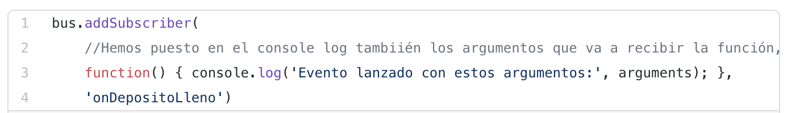

Programación de Aplicaciones Telemáticas
Tema 14: Event Driven Architectures
Agenda
- Introduccion
- Conceptos
- Patrones de diseño
- CQRS
- Implementing EDA with Spring Cloud Stream
- Testing
Sessión 1
- Introduccion
- Conceptos
- Patrones de diseño
- CQRS
Introducción
La Arquitectura dirigida por eventos, Event-driven architecture o EDA, es un patrón de arquitectura software que promueve la producción, detección, consumo y reacción a eventos.
Introducción
Este patrón arquitectónico puede ser aplicado por el diseño e implementación de aplicaciones y sistemas que transmitan eventos entre componentes software que estén emparejados libremente y servicios.
Conceptos
- Evento
- Agente
- Consumidor (Sink)
- Canal
Conceptos
Evento
Un evento puede ser definido como "un cambio significativo en un estado"
Un evento puede estar hecho de dos partes, el encabezado evento y el cuerpo evento.
El encabezado de evento puede incluir información como el nombre, fecha y hora y el tipo de evento.
El texto del evento es la parte que describe lo que ha ocurrido en realidad, no debe ser confundido con el patrón o la lógica que se puede aplicar en reacción al evento en sí.
Conceptos
Agente (Productor)
Entidad que crea y publica el evento
Desconoce todo lo relacionado con el consumo del evento: entidad consumidora, implicaciones y/o consecuencias
En muchos casos genera los datos del evento o bien transforma la información que tiene en un formato adecuado
Conceptos
Consumidor
Entidad que consume el evento desde un lugar y que por tanto ejecuta/interpreta la lógica de negocio
Se subscribe al canal de eventos y no tienen en consideración al productor
Conoce como distinguir entre eventos
Enfoque asíncrono
Conceptos
Canal
Medio donde se publican, localizan, viven y/o son consumidos los eventos
Se suele trabajar con el concepto de motor de eventos
Pueden tener cierta lógica de aplicación sobre los eventos: almacenamiento, expiración, entrega, backup, etc
Patrones de Diseño
- Observador
- Publicador y Subcriptor (EventBus)
- Stream (WebSocket)
- Clave y Valor (In Memory KV)
- Eventos en Transacciones
Patrones de Diseño
Observador
Un objeto, llamado sujeto, tiene otros objetos del cual dependen, que son los observadores. Es decir define una dependencia del tipo uno a muchos entre objetos, de manera que cuando uno de los objetos cambia su estado(sujeto), notifica este cambio a todos los dependientes, normalmente a través de uno de su métodos.
Patrones de Diseño
Observador
Patrones de Diseño
Observador (Ejemplo 1)
Patrones de Diseño
Observador (Ejemplo 1)
Patrones de Diseño
Observador (Ejemplo 1)
Patrones de Diseño
Observador (Ejemplo 1)
Patrones de Diseño
Observador (Ejemplo 2)
Patrones de Diseño
Observador (Ejemplo 2)
Patrones de Diseño
Observador (Ejemplo 2)
Patrones de Diseño
Publicador y Subcriptor
Alguien que envía notificaciones (publisher) y hay otros objetos que las reciben (subscribers), pero con una diferencia: el publisher no es el que programa las notificaciones, como en el patrón del Observador. El que lo hace es el event bus o broker o message broker.
Patrones de Diseño
Publicador y Subcriptor
Patrones de Diseño
Publicador y Subscriptor (Ejemplo 3)
Patrones de Diseño
Publicador y Subscriptor (Ejemplo 3)
Patrones de Diseño
Publicador y Subscriptor (Ejemplo 3)
Patrones de Diseño
Publicador y Subscriptor (Ejemplo 3)
Patrones de Diseño
Stream (WebSocket)
El modelo petición-respuesta es especialmente común en las interacciones navegador-servidor.
Usando Kafka junto con websockets podemos tener todo el flujo dirigido por eventos, incluyendo las interacciones navegador-servidor.
Patrones de Diseño
Stream (Ejemplo 4)
Patrones de Diseño
Stream (Ejemplo 4)
Patrones de Diseño
Stream (Ejemplo 4)
Patrones de Diseño
Stream (Ejemplo 4)
Patrones de Diseño
Clave y Valor
Este patrón esta orientando en aquellos escenarios que necesitamos baja latencia y la información sea persistente en el tiempo sin utilizar una Base de Datos.
La solución tradicional puede pasar por utilizar una Base de Datos Clave-Valor (KV) como REDIS.
Kafka ofrece una solución para "compactar" los eventos y no borrar la última versión del estado de las claves.
Patrones de Diseño
Clave y Valor (Ejemplo 5)
Patrones de Diseño
Clave y Valor (Ejemplo 5)
Patrones de Diseño
Clave y Valor (Ejemplo 5)
Patrones de Diseño
Eventos en Transacciones
Este patrón esta orientando en aquellos escenarios que requiere coordinar diferentes sistemas/plataformas como si fuera una transacción en una Base de Datos.
Un ejemplo muy común que utiliza esté patrón podría ser un e-commerce.
Patrones de Diseño
Transacciones (Ejemplo 6)
Patrones de Diseño
Transacciones (Ejemplo 6)
Patrones de Diseño
Transacciones (Ejemplo 6)
CQRS
Definición
Command Query Responsability Segregation (CQRS), es un patrón de arquitectura en el que tenemos dos subsistemas diferenciados, uno responsable de los comandos, y otro responsable de las consultas.
Es muy utilizado en el diseño de arquitecturas basadas en Dominios Funcionales (DDD).
CQRS
Objetivo
- Un modelo interno donde se guarda la información de actualización (Command)
- Uno o varios modelos de lectura de los que las aplicaciones leen la información (Query)
- No se puede dejar que otros sistemas tengan acceso al modelo de escritura (Responsability)
CQRS
Escalabilidad
CQRS nos permite escalar nuestro sistema de forma independiente: a menudo tenemos que gestionar muchas más lecturas que escrituras, de ahí que la escalabilidad sea diferente.
CQRS
Negocio
Separar el modelo de escritura de los modelos de lectura nos ayuda a separar los aspectos complejos de nuestro dominio (quién necesita qué, quién es responsable de qué) y a aumentar la flexibilidad de nuestra solución.
CQRS
Concurrencia
Técnicamente, CQRS también puede simplificar la gestión de la concurrencia y el bloqueo (bases de datos transaccionales).
CQRS
Conclusiones
- Los requisitos del negocio cambian mucho
- La empresa no sabe exactamente hacia dónde se dirige
- Tenemos problemas de escalabilidad
CQRS
Conclusiones
- Colaboramos con otros equipos (Externos)
- Múltiples servicios compiten para alterar los mismos recursos
- Estamos orquestando otros servicios a nuestro alrededor
CQRS
Conclusiones
- Lo que ocurra en nuestro dominio les afectará a ellos o viceversa
- Nuestro dominio está orientado a la escritura, no leemos nuestros propios datos, otras aplicaciones sí
Sessión 2
- Implementing EDA with Spring Cloud Stream
- Testing